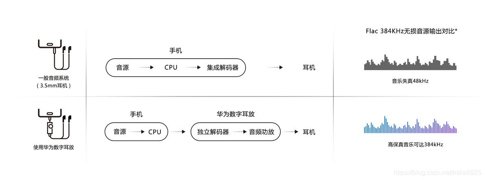
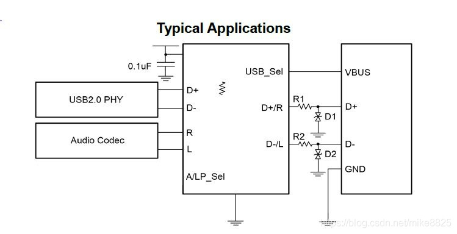
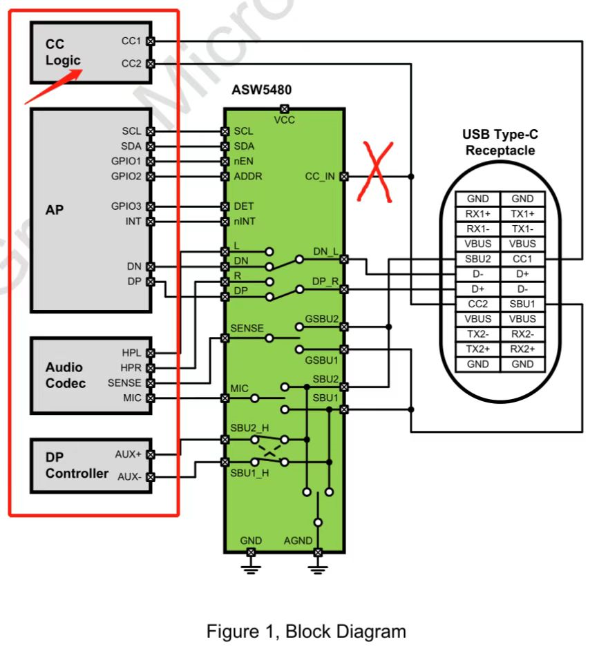
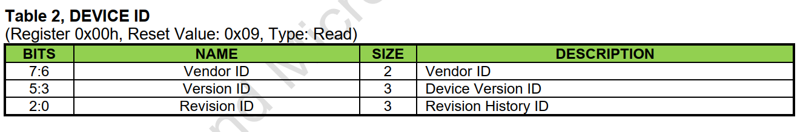
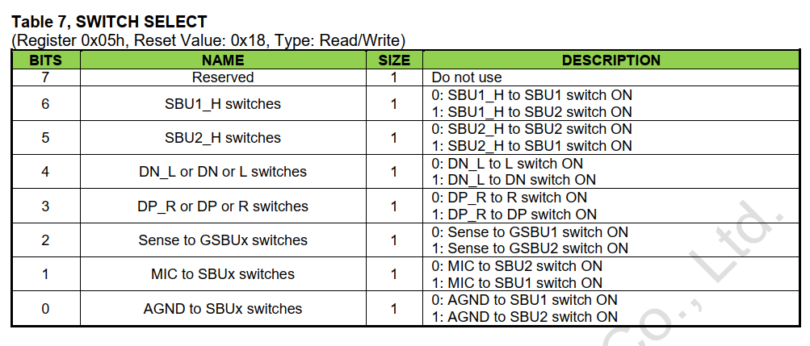

概述
qcom qcm2290 TypeC 耳机功能调试过程。
参考
数字耳机和模拟耳机
typec耳机(中图)可能是模拟耳机也可能是数字耳机，以耳机内有没有芯片进行判别。数字耳机包含一个usb声卡+DAC&&ADC+amp+模拟耳机，当数字耳机接入到手机(otg)或者电脑后，手机或者电脑识别到了usb设备，并创建相应的声卡后，数字音频信号通过usb传输到数字耳机后，数字耳机通过DAC转换并放大信号，就可以听到声音了，这也是usb声卡的原理。
手机中模拟和数字耳机的差异： 
DAC :Digital to analog converter数字模拟转换器
AMP:放大器
kernel打开数字耳机支持需要打开宏CONFIG_SND_USB_AUDIO。
typec cc识别原理
请参考以下文档音频设备章节：
0001_TypeC基础知识.md
typec耳机方案
电路板设计有一个耳机自动切换ic(模拟耳机的左右声道接在usb+、usb-,因此需要切换开光，如DIO3202A, vbus电平为高，芯片切换到usb通路,vbus电平为低，切换到耳机通路),数字耳机接入耳机后，typec逻辑芯片检测到从设备，cpu上的usb切换到主模式，并提供5v(vbus)给从设备供电，完成相应的数字信号传输。 
目前A6650项目使用的是asw5480切换芯片，硬件原理如下： 
CC_IN可以不经过ASW5480这颗芯片，直接连接到主控基带芯片即可，CC1和CC2的逻辑都是通过主控基带芯片来完成判断的,ASW5480这颗芯片是受控端，它只是个开关，开关的开启关闭和切换到哪一个通道是通过基带的主控通过I2C发送寄存器来实现的。
USB硬件通路:DN_L to DN switch ON、DP_R to DP switch ON
耳机硬件通路: DN_L to L switch ON、DP_R to R switch ON
寄存器表
device id 
SWITCH SELECT 
参考代码
打印
插入typec耳机有打印如下：
[Tue Aug 2 23:54:33 2022] pax-pd-manager soc:pax_pd_manager: pd_tcp_notifier_call Audio plug in
[ 537.098158] init: Control message: Could not find 'android.hardware.soundtrigger@2.0::ISoundTriggerHw/default' for ctl.interface_start from pid: 407 (/system/bin/hwservicemanager)
[ 539.104856] init: Control message: Could not find 'android.hardware.soundtrigger@2.0::ISoundTriggerHw/default' for ctl.interface_start from pid: 407 (/system/bin/hwservicemanager)
[ 540.105379] init: Control message: Could not find 'android.hardware.soundtrigger@2.0::ISoundTriggerHw/default' for ctl.interface_start from pid: 407 (/system/bin/hwservicemanager)
[ 541.106552] init: Control message: Could not find 'android.hardware.soundtrigger@2.0::ISoundTriggerHw/default' for ctl.interface_start from pid: 407 (/system/bin/hwservicemanager)
[ 542.109764] init: Control message: Could not find 'android.hardware.soundtrigger@2.0::ISoundTriggerHw/default' for ctl.interface_start from pid: 407 (/system/bin/hwservicemanager)
[ 542.344424] pax-pd-manager soc:pax_pd_manager: pd_tcp_notifier_call event = 14
[Tue Aug 2 23:55:39 2022] pax-pd-manager soc:pax_pd_manager: pd_tcp_notifier_call Audio plug out